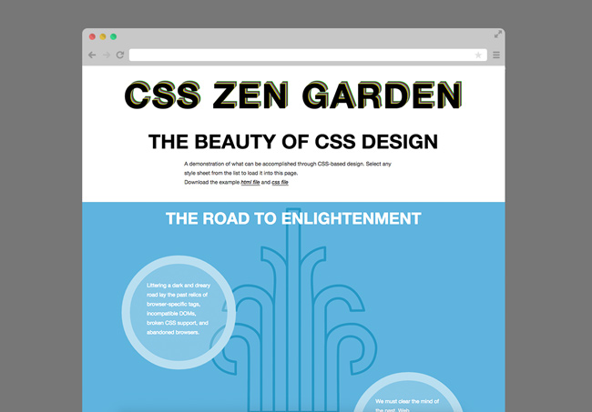

View the project live or view the code on Github.
This project is based on CSS Zen Garden, an exercise in the power of CSS. For this project, I was only allowed to edit the CSS file. I used ::before and ::after to create my layout. One requirement that we had in class that is different from the CSS Zen Garden requirements is that we had to use CSS animations. I was inspired by posters from the 1976 Summer Olympic Games in Montreal and wanted to carry bold primary colors and '70s style design throughout this website.
HTML, RWD, Sass, Bourbon, Illustrator.
The biggest challenge with this project was not being able to edit the HTML file. However, this ended up being a limitation that helped me grow. By having that limitation, I was forced to learn more about CSS and learn how to work with ::before and ::after.
Another challenge I faced was bringing in Olympic inspiration without being obvious. To do this, I stuck colors found in the Olympic rings and also used Illustrator to create patterns inspired by Olympic posters.
